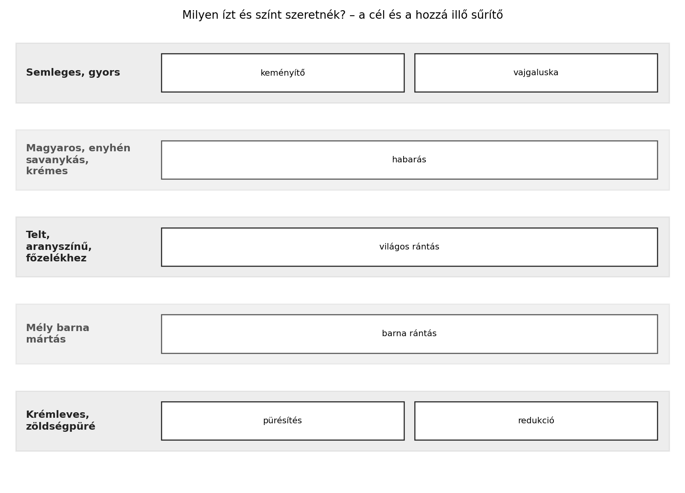

A konyhán sokszor nem az a kérdés, hogy egy étel megfőtt-e, hanem hogy milyen a sűrűsége. A híg leves, a csomós főzelék vagy a nyúlós mártás azonnal látszó hiba, és a vendég visszaküldheti az ételt. Ugyanakkor a sűrítés nem csupán „sűrűbbé tétel”: a megfelelő eljárással krémes, fényes, jól bevonó állagot, telt ízt és kellemes színmélységet adunk az ételnek. Ezért a szakácsnak pontosan kell ismernie, mikor választ rántást, habarást, keményítős sűrítést, liezont vagy éppen redukciót.
Képzeld el, hogy a főzőüstben 10 liter zöldborsófőzelék készül. A zöldborsó megfőtt, az alaplé íze kellemes, de a lé túl híg. Ha ebbe hirtelen egy nagy adag forró lisztes keveréket öntünk, csomók keletkeznek, és az étel nyers lisztízű marad. Ha viszont pontosan kimért, aranysárga világos rántást készítünk, azt kevés lével kikeverjük, és folyamatos keverés mellett az egészhez adjuk, akkor a főzelék selymesen, egyenletesen sűrűsödik be. Ebben a fejezetben ezeket a módszereket és arányaikat tanuljuk meg.
Definíció. A sűrítés olyan konyhai művelet, amellyel a folyadék viszkozitását, azaz folyósságát növeljük. Történhet keményítő csirizesedésével, zsiradék és liszt hevítésével, tojásos-tejszínes eleggyel, pürésített hozzávalóval vagy a folyadék koncentrálásával.
Definíció. A dúsítás elsősorban nem a folyadék sűrűségét növeli, hanem az ételt gazdagítja: zsiradékkal, tejszínnel, tojással vagy sajttal telt ízt, krémes állagot és magasabb tápértéket ad. A dúsítás gyakran sűrít is, de célja az íz és az állag gazdagítása.
A két fogalmat soha ne keverjük össze: lehet egy étel dúsított anélkül, hogy technikai értelemben sűrítenénk, és lehet sűrített anélkül, hogy ízben gazdagítanánk.
A búzaliszt, a kukoricakeményítő, a burgonyakeményítő és a rizsliszt keményítőszemcséket tartalmaz. A keményítő hideg vízben nem oldódik, melegítve azonban a szemcsék vizet vesznek fel, megduzzadnak, és a folyadék besűrűsödik. Ezt a folyamatot csirizesedésnek nevezzük. A csirizesedéskor a keményítőszemcsék között lévő vízmolekulák megkötődnek, ezért az étel sűrűbbé válik. A már kész keményítős ételt nem szabad sokáig forralni, mert a szemcsék szétesnek, és az állag nyúlóssá vagy híggá válhat. Lehűléskor a csirizesedett keményítő visszarendeződik, ezért a keményítős fogásokat frissen, melegen tálaljuk.
Definíció. A rántás (franciául roux) zsiradék és búzaliszt együtt hevített keveréke. A konyhai gyakorlatban leggyakrabban azonos tömegű zsiradékot és lisztet használunk. A zsiradék lehet vaj, sertészsír, libazsír, kacsa- vagy tyúkzsír, illetve növényi olaj.
A rántás színét a hevítés ideje és hőmérséklete határozza meg. A kémiai folyamatok között először a liszt keményítője bomlik rövidebb láncokra (dextrinizáció), majd a Maillard-reakció és a karamellizáció barnulást ad.
| Rántásfajta | Szín | Tájékoztató pirítási idő | Főbb felhasználás | Allergén |
|---|---|---|---|---|
| Fehér rántás | Csak fehér, halvány | kb. 1–2 perc, alacsony lángon | Fehér mártások, krémlevesek, fehér főzelékek | glutén, tej, ha vajjal készül |
| Világos rántás | Zsemleszínű, aranysárga, fényes | kb. 3–4 perc, közepes lángon | Főzelékek, egyszerűbb levesek, világos mártások | glutén, tej, ha vajjal készül |
| Barna rántás | Mogyoróbarna, középbarna | kb. 10–15 perc, alacsony–mérsékelt lángon, folyamatos keveréssel (tanulási érték, ellenőrizendő) | Barnamártások, vadasmártás, barna húslevesek | glutén, tej, ha vajjal készül |
A pirítási idő tájékoztató érték, mert a zsiradék fajtája, az edény vastagsága és a láng erőssége is befolyásolja. Az a legfontosabb, hogy a rántást folyamatosan keverjük, és időben levesszük a tűzről, amikor a rántás eléri a kívánt színt.
Szabály. A rántás liszt–zsiradék aránya 1:1 tömegarány. Például 100 g zsiradékhoz 100 g finomliszt tartozik.
Higiénia. A forró zsiradék súlyos égési sérülést okozhat. Füstölgő zsiradékba folyadékot önteni tilos. A forró rántást csak a tűzről levéve, kissé lehűlve, kis adag hideg folyadékkal, folyamatos keverés mellett engedd fel; az arcodat tartsd távol, mert a víz a forró zsiradékban felforr és fröccsen. Ha a zsiradék füstölni kezd, azonnal vegyük le a tűzről, mert már bomlik, és a kész rántás keserű lehet.
Tilos. A megégett, sötétbarna vagy keserű szagú rántást nem szabad felhasználni. Az égett ízt már nem lehet kijavítani.
Az alábbi eljárás a világos rántást mutatja be, de ugyanezt a sort használjuk a fehér és a barna rántásnál is, csak a pirítás idejét változtatjuk.
Szabály. A rántás készítésének sorrendje:
A rántást akkor használjuk csomómentesen, ha először kevés hideg folyadékkal simára keverjük, majd folyamatos keverés mellett a forró ételhez öntjük. Vagy a forrásban lévő ételből merünk ki egy keveset, azzal hígítjuk a rántást, és ezt a keveréket öntjük vissza. A lényeg, hogy a rántás ne egyszerre, hígítatlanul kerüljön a forró folyadékba, mert akkor csomós marad.
A rántás használata után az ételt még 3–5 percig forraljuk, hogy a liszt nyers íze eltűnjön.
A felső sor a táblázat három rántását és a használhatatlan, égett rántást mutatja; a fekete-fehér rajzon a szürke árnyalat jelzi a színt, a pirítási idő alatta tájékoztató érték. A rántás színét mindig a szemed alapján, világos háttér előtt ítéld meg, ne az óra szerint. Az alsó sor a fenti bekeverés három lépése (felengedés hidegen, beöntés keverve, forralás) és a jellegzetes hiba: a hígítatlanul beöntött rántás csomós marad. A HTML-kiadásban a képek lapozhatók.
Definíció. A habarás hidegen elkevert tejföl és búzaliszt keveréke, amelyet forrás közben adunk az ételhez. A habarás enyhén savanykás ízt ad, és főleg magyaros főzelékeknél, leveseknél használatos.
A habarás aránya folyadékfüggő: 1 liter léhez nagyjából 20–30 g lisztet és 100–150 ml tejfölt keverünk. Ez tájékoztató tanulási érték, az üzemi receptúra ennél eltérhet (ellenőrizendő: üzemi anyaghányad-gyűjtemény).
Szabály. A habarást úgy készítjük csomómentesre, hogy a hideg tejfölben a lisztet simára keverjük. Ezután a forró ételből kevés levet adunk hozzá, elkeverjük, majd ezt a keveréket visszaöntjük az edénybe. Végül kiforraljuk 2–3 percig.
Ha a forró ételhez hirtelen, temperálás nélkül öntjük a hideg habarást, a tejföl kicsapódhat, és a liszt csomós marad.
A temperálás lényege a 2. kép: a hideg habarást előbb kevés forró lével langyosra melegíted, így a visszaöntéskor (3. kép) nem éri hősokk. A 4a és 4b kép a két befejezés különbségét mutatja: a habarást kiforralod, a lentebb tárgyalt liezont viszont már nem forralod, mert a tojássárgája kicsapódik. A hibás kép nagyított részlete a kicsapódott tejföl és a lisztcsomók. A HTML-kiadásban a lépések lapozhatók.
Definíció. A vajgaluska hidegen összegyúrt vaj és liszt azonos tömegű keveréke. A francia szaknyelvben beurre manié néven ismert. Apró golyókat formázunk belőle, és a forrásban lévő ételbe morzsoljuk, majd habverővel elkeverjük.
A vajgaluska előnye, hogy nincs előpirítás, ezért íze tiszta, „friss” marad. Gyorsan sűrít, és jól használható utólagos sűrítésre, ha az étel hígabb a kelleténél.
Szabály. A vajgaluskát forralás közben adjuk az ételhez, és 2–3 percig keverjük, hogy a liszt teljesen kifőjön. Enyhe utósűrítéshez literenként kb. 20–30 g, mártássűrűséghez kb. 40–60 g vajgaluska kell; mivel a vajgaluska fele vaj, a lisztértéke kb. a fele (ellenőrizendő: üzemi receptúra).
Definíció. A keményítős sűrítés hideg vízben elkevert étkezési keményítővel történik. Használhatunk kukoricakeményítőt, burgonyakeményítőt vagy rizskeményítőt.
A keményítőt mindig hideg vízben keverjük el, mert forró folyadékban azonnal csomóssá válik. A keveréket a forrásban lévő ételhez öntjük, folyamatos keverés mellett, majd rövid ideig forraljuk. A keményítős sűrítés előnye, hogy zsiradék nélkül dolgozik, így kalóriaszegényebb, és gluténmentes változatban is elérhető. Hátránya, hogy lehűlve gyorsan visszarendeződik, ezért frissen, melegen kell tálalni.
Szabály. Az étkezési keményítőt hideg vízzel dolgozzuk el. 1 liter folyadék sűrítéséhez kb. 15–25 g keményítő szükséges, de a pontos mennyiség az étel jellegétől függ (ellenőrizendő: üzemi anyaghányad).
Allergén. A tiszta kukorica-, burgonya- vagy rizskeményítő gluténmentes lehet, de csak akkor, ha a csomagoláson feltüntették, és a konyhában nem szennyeződött búzaliszttel. A búzakeményítő glutént tartalmaz.
Definíció. A liezon tojássárgája és tejszín vagy tej keveréke, amelyet meleg ételbe adunk, hogy az selymessé és sűrűbbé váljon. A liezon egyszerre dúsít és sűrít, mert a tojássárgája fehérjéi és a tejszín zsiradékja gazdagítja az ételt, miközben a hő hatására a tojás szerkezete is sűríti.
A liezon hőmérséklet-érzékeny. A tejszínnel kikevert tojássárgája (liezon) kb. 80–85 °C körül csapódik ki (a tiszta tojássárgája már 65–70 °C-on alvad; ellenőrizendő: pontos érték), ezért a liezonnal készült ételt nem szabad forralni. A liezonos ételnek a hozzáadás után, kevergetve el kell érnie a HACCP-terv szerinti hőmérsékletet (pl. 75–80 °C; ellenőrizendő), de nem forrhat; közétkeztetésben és sérülékeny vendégnek pasztőrözött tojássárgáját használj, mert a nyers tojás Salmonella-kockázatot hordoz (ellenőrizendő). A hőkezelés után az étel hőmérsékletét mérsékeljük, majd folyamatos keverés mellett, vékony sugárban adjuk hozzá a liezont. Ha az étel forr, a tojás apró rögökké áll össze.
Szabály. A liezon alkalmazásakor először a tojássárgáját a hideg tejszínnel kikeverjük, majd kevés forró étellel temperáljuk, végül visszaöntjük az edénybe. Ezután nem forraljuk: legalább 63 °C-on, de 80 °C alatt tartjuk (tanulási érték, ellenőrizendő: HACCP-terv).
Definíció. A redukció a folyadék térfogatának csökkentése forralással, azaz bepárlás. A besűrűsödő folyadék íze koncentrálódik, mert a víz elpárolog, az ízanyagok viszont visszamaradnak.
A redukcióhoz nem kell sűrítőanyag. Leggyakrabban borokat, gyümölcsleveket, balzsamecetet vagy hús- és csontleveket redukálunk mártásokhoz. Például 1 liter vörösborból 250 ml-re beforralva kellemes, szirupos mártásalapot kapunk.
Szabály. A redukciókor lassú, egyenletes forralást alkalmazunk, és közben keverjük, hogy az edény falára tapadt anyag ne égjen le. A sót és a savas ízt csak a redukció vége felé állítsuk be, mert a térfogat csökkenésével az íz erősödik.
Definíció. A pürésítéses sűrítés során az étel saját, főtt zöldségét, hüvelyesét vagy gyümölcsét turmixoljuk simára. Például főtt burgonya, sütőtök, lencse vagy sárgarépa pürésítésével krémleveseket sűríthetünk.
A pürésítést gyakran botmixerrel végezzük. A forró folyadék gőze fröccsenést okozhat, ezért a botmixert ferdén, az edényben tartva, alacsony fokozaton indítva használjuk.
Definíció. A kenyérrel/zsemlével sűrítés régi, takarékos eljárás. Fehér kenyeret vagy zsemlét áztatunk, pürésítünk, majd a levesbe keverjük. Ez a sűrítés glutént és esetenként tejet tartalmaz, ezért vendégtájékoztatásnál jelezni kell.
A dúsítás az íz és az állag gazdagítását szolgálja.
A különböző sűrítőket a használati cél és az étel jellege alapján választjuk meg. Az első kérdés mindig ez: milyen ízt és színt szeretnék? A sűrítés előtti hőkezelést (például sütve párolást, párolva sütést vagy kombi üzemet) a Mikrohullámú hőkezelés, füstölés és kombinált eljárások alfejezet eljárásválasztási táblázata szerint választjuk meg; a sűrítő a már megfelelően előkészített ételhez kerül. A következő ábra öt lehetséges célt mutat egymás mellett; mindegyik célhoz a hozzá illő sűrítő tartozik. Ezek nem egymás utáni lépések, hanem választási lehetőségek.

A fenti ábra csak irányt mutat. A konyhai gyakorlatban ugyanazt az ételt többféleképpen is lehet sűríteni, azonban a végeredmény íze, színe és allergénprofilja eltér.
Kritikus pont. A sűrített ételek víz-, fehérje- és keményítőtartalma miatt kiváló táptalajt jelentenek a mikrobák számára. A kész, sűrített ételt ezért melegen tartáskor legalább 63 °C fölött kell tartani (ellenőrizendő: HACCP-terv / NÉBIH-útmutató). Ha az ételt lehűtjük, gyorsan, lehetőleg sekély edényben kell hűteni, és a jogszabályban, illetve a HACCP-tervben rögzített időn belül hideg tárolásra kell tenni (ellenőrizendő: konkrét idő).
Higiénia. A rántást mindig tiszta, száraz eszközökkel készítsük. A forró zsiradékba ne kerüljön víz véletlenül, mert a fröccsenő zsiradék égést okoz; a rántást felengedni csak a fenti módon szabad. A botmixert a forró folyadékba merítés után ne emeljük ki bekapcsolva, mert a gőz és a forró cseppek szétfröccsenhetnek. A forró edény fogantyúját takaróruhával fogjuk, és az edényt ne hagyjuk a tűzhely szélén.
A sűrítési munkánál gyakran átszámítjuk a receptúrát. Az 1:1 arányú rántásnál a liszt és a zsiradék tömege azonos.
Számítás. 10 adag zöldborsófőzelékhez 100 g lisztet és 100 g zsiradékot használunk a rántáshoz. Mennyi liszt és zsiradék szükséges 35 adaghoz?
Adott:
adaghoz
liszt és
zsiradék.
Keresett:
adaghoz szükséges mennyiség.
Ellenőrzés: liszt és zsiradék 1:1 arányú, és a 35 adag tömegaránya is megfelel. A tanulási példa alapján az üzemben mindig az aktuális receptúrából kell visszaszámolni.
Számítás. Egy krémleveshez 1 liter folyadékra 25 g étkezési keményítőt számolunk. Mennyi keményítő kell 6 liter folyadékhoz?
A kimérés után a keményítőt hideg vízzel dolgozzuk el, és forrás közben adjuk a leveshez.
Adagszám: 10 adag
Adagsúly: kb. 300 g/adag (a nyersanyagok összege kb. 3
440 g, a főzés közbeni párolgás után kb. 3,1–3,2 kg)
Anyaghányad 10 adagra
| Nyersanyag | Mennyiség 10 adagra | Megjegyzés |
|---|---|---|
| Zöldborsó | 1 500 g | tisztítva, fagyasztott vagy friss |
| Vöröshagyma | 80 g | tisztítva |
| Sertészsír vagy vaj | 120 g | 20 g a dinszteléshez, 100 g a rántáshoz |
| Finomliszt | 100 g | világos rántáshoz; allergén: glutén |
| Zöldség- vagy húsleves | 1 200 ml | felöntőlé |
| Tej | 400 ml | allergén: tej |
| Só | 20 g | ízlés szerint |
| Cukor | 10 g | ízlés szerint |
| Petrezselyem | 10 g | tálaláshoz |
Allergének: glutén, tej; zeller (ha a felöntőlé zellert tartalmaz – a felhasznált alaplé receptúrája szerint); feltétnél tojás (tükörtojás) lehet.
Eszközök: vastag aljú főzőedény, habverő, merőkanál, kés, mérleg, mérőedény, hőmérő.
Kritikus pontok: A rántást pontosan 1:1 arányban készítjük. A főzeléket forrásig hevítjük; készentartásnál a HACCP-terv szerinti melegen tartási hőmérséklet, legalább 63 °C fölött tartjuk (ellenőrizendő: HACCP-terv), hűtésnél gyorsan, sekély edényben hűtjük (ellenőrizendő: NÉBIH-útmutató).
Minőségi követelmények: Egynemű, selymes, jól bevonó állag; haragos zöld vagy világoszöld szín; enyhén édeskés, kellemes zöldségíz; nincs csomó, nincs nyers lisztíz.
Tipikus hibák:
A sűrített étel akkor jó, ha az állag egyenletes, csomómentes, fényes, és nem „enyves”. A színe megfelel az eljárásnak: fehér rántásnál halvány, világos rántásnál aranysárga, barna rántásnál mély barna, de nem fekete. Az ízében nem érződik nyers liszt vagy égett zsiradék. Kóstoláskor mindig tiszta kanalat használjunk, és utána mossuk el.
Hiba: A habarás csomós lesz, és a tejföl
pöttyös.
Ok: A hideg habarást temperálás nélkül, hirtelen
öntöttük forrásba.
Javítás: Botmixerrel vagy szitán való átpasszírozással
lehet menteni, de a kicsapódott tejföl már nem lesz tökéletes.
Megelőzés: A forró ételből merjünk ki, keverjük vele ki
a habarást, majd fokozatosan öntsük vissza.
Hiba: A keményítős étel lehűlés után kocsonyás,
darabos.
Ok: A keményítő visszarendeződése
(retrogradáció).
Javítás: Frissen, melegen tálaljuk; ha újra melegítjük,
keveréssel fellazítható, de az állag nem lesz azonos.
Hiba: A liezonnal dúsított mártásban tojásdarabkák
úsznak.
Ok: A mártás forrt, amikor hozzáadtuk a tojásos
keveréket.
Javítás: A szűrés javíthat, de az állag sérül;
megelőzésképpen a hőmérsékletet 80–85 °C alatt kell tartani
(ellenőrizendő).
Egy konyhán a szakács barna rántást készített vadasmártáshoz. Az előkészítő konyhai alkalmazott később tette le a rántást, mint kellett volna, mert telefonon beszélt. A rántás sötétbarnára, majdnem feketére pirult, és keserű szagot árasztott. A séf azonnal kidobta, mert tudta, hogy az égett rántás az egész mártást tönkreteszi. A tanulság: a rántást nem lehet őrizetlenül hagyni, mert a színváltás után másodpercek alatt keserűvé válik.
1. feladat (A)
Sorold fel a rántás fajtáit szín szerint, és írd le, mire használjuk
őket.
2. feladat (A)
Számold ki a liszt mennyiségét 25 adag zöldborsófőzelékhez, ha 10
adaghoz 100 g lisztet ír elő a technológiai lap.
3. feladat (B)
Állítsd helyes sorrendbe a habarás lépéseit: (a) a forró ételből kevés
levet hozzáadunk; (b) a tejfölben a lisztet simára keverjük; (c) a
keveréket visszaöntjük az ételbe; (d) kiforraljuk 2–3 percig.
4. feladat (B)
Melyik sűrítőanyag gluténmentes a felsoroltak közül? Indokold:
búzaliszt, kukoricakeményítő, zsemle, barna rántás.
5. feladat (C)
Egy krémleves 1 literéhez 200 ml tejszínt és 1 tojássárgáját használunk
liezonként. Mennyi tejszín és tojássárgája szükséges 8 liter leveshez?
Miért nem forralhatod a liezonnal dúsított levest?
6. feladat (D)
A zöldborsófőzelék rántása csomós lett. Írd le a hibaelemzést: tünet,
lehetséges ok, ellenőrzés, ok, javítás és megelőzés.
Önellenőrzés – válaszok
Feladatok megoldásai
A sűrítés a folyadék viszkozitásának növelése, a dúsítás pedig az íz, az állag és a tápérték gazdagítása. A rántás zsiradék és búzaliszt 1:1 tömegarányú keveréke. Fehér, világos és barna fajtája a pirítás idejétől függ. A habarás hideg tejföl–liszt keverék, amelyet temperálva adunk az ételhez. A vajgaluska 1:1 arányú hideg vaj–liszt keverék. Az étkezési keményítőt hideg vízzel keverjük el, és forrásban adjuk az ételhez; gluténmentes változatai alkalmasak érzékeny vendégek étkeinél. A liezon tojássárgája-tejszín keverék, amelyet nem forralunk, mert a tojás kicsapódik. A redukció a folyadék forralásos koncentrálása; a pürésítés saját zöldséggel, a kenyérrel/zsemlével sűrítés pedig áztatott pékáruval történik. A sűrített ételt forrón, legalább 63 °C fölött tartjuk, vagy gyorsan hűtjük (ellenőrizendő: HACCP-terv). A sűrítési arányokat a bundázási, alapleves, főzelék-, leves- és mártástechnológiai alfejezetekben használjuk tovább: Bundázási eljárások, Alaplevek, kivonatok és pecsenyelevek, A főzelékek rendszere és a sűrített (magyaros) főzelékek, Sűrített levesek: egyszerű, püré- és krémlevesek, A mártások rendszere, egyszerű meleg mártások és gyümölcsmártások.
Forrástípusok: klasszikus konyhatechnológiai ismeretek (rántás, habarás, keményítős sűrítés, liezon, redukció); a Szénhidrátok és élelmi rostok alfejezet keményítő-csirizesedési alapjai; 1169/2011/EU allergénjelölési elvek; HACCP-alapú hőmérsékleti és hűtési követelmények.
Ellenőrizendő pontok: a rántás pirítási időtartamai; a habarás, keményítős sűrítés és vajgaluska fajlagos mennyiségei; a liezon hőmérsékleti határa; a készentartás és gyors visszahűtés konkrét értékei; a gluténmentes keményítők jelölési és keresztszennyeződési követelményei. A megadott értékek tanulási értékek, az üzemi gyakorlatban a HACCP-terv, a NÉBIH-útmutató és az üzemi anyaghányad-gyűjtemény a mérvadó.